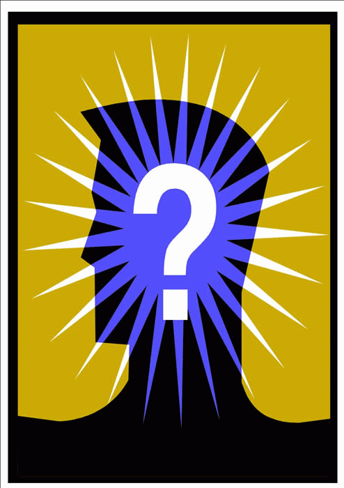

|  | Uitslag 19de FAMILIEQUIZ (vrijdag 26 februari 2010) |
| Plaats | Nummer | Ploegnaam | Totaal |
| 1 | 39 | sjareltje Vuylsteke | 107 |
| 2 | 12 | oudercomité STC | 105 |
| 3 | 7 | dement maar content | 104 |
| 4 | 37 | Soep met letterkes | 102 |
| 5 | 33 | S.CH.O.L. | 101 |
| 6 | 40 | Roma Victor! | 100* |
| 7 | 31 | AMNESIA | 100* |
| 8 | 24 | De Herrezen Glorie | 100* |
| 9 | 26 | NFP | 99 |
| 10 | 36 | Kleurenwhist | 98 |
| 11 | 28 | Koken met je-zus | 97* |
| 12 | 13 | Nivo Nihil | 97* |
| 13 | 20 | Tsjinglepipikoekoek | 97* |
| 14 | 18 | de pimpampoentjes | 93 |
| 15 | 34 | Vat vol kennis | 91* |
| 16 | 32 | Old And B-Youth-iful | 91* |
| 17 | 35 | Sweet Sixteen | 89 |
| 18 | 1 | Turbo Turbo | 87* |
| 19 | 45 | AmbitiousButRubbish | 87* |
| 20 | 4 | El Trulli | 87* |
| 21 | 46 | De Schattemannen | 85 |
| 22 | 38 | peppie & kokkie | 85 |
| 23 | 17 | zonnebloempjeP | 84* |
| 24 | 41 | E = mc² | 84* |
| 25 | 42 | kwoudakketquizt | 84* |
| 26 | 9 | de afrekening | 83 |
| 27 | 30 | François | 81 |
| 28 | 25 | Crazy in love | 80 |
| 29 | 19 | The Pacmannekes | 78 |
| 30 | 44 | Old Skool | 75 |
| 31 | 11 | zonnebloempjeM | 73* |
| 32 | 5 | The Boston Tea Party | 73* |
| 33 | 3 | Flap Flap | 73* |
| 34 | 8 | Vidi Vidi Vici | 72 |
| 35 | 16 | Homo marginalis | 71* |
| 36 | 2 | Sugar City | 71* |
| 37 | 23 | ZonnebloempjeN | 68 |
| 38 | 22 | Intelligentia | 66* |
| 39 | 10 | Haanalingsteken | 66* |
| 40 | 27 | De Happenpeipers | 66* |
| 41 | 6 | Just for fun | 65 |
| 42 | 14 | Erika's Van Looy | 60 |
| 43 | 29 | koken met je-broer | 56 |
| 44 | 15 | Einstein Brain | 55* |
| 45 | 43 | De Peppers | 55* |
| 46 | 21 | The incredibles | 41 |